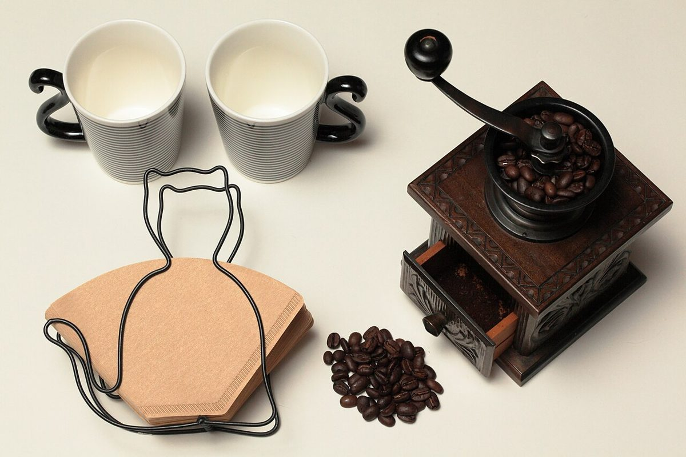
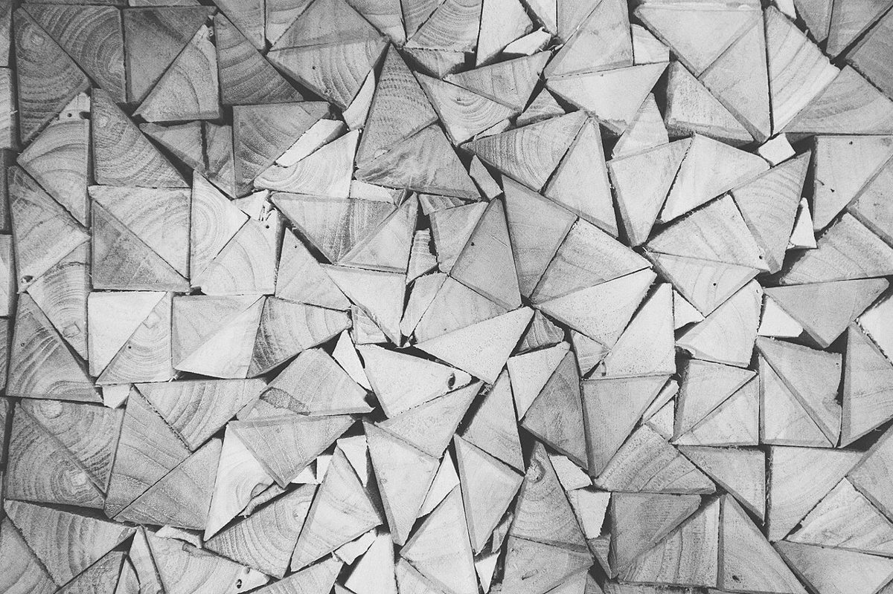
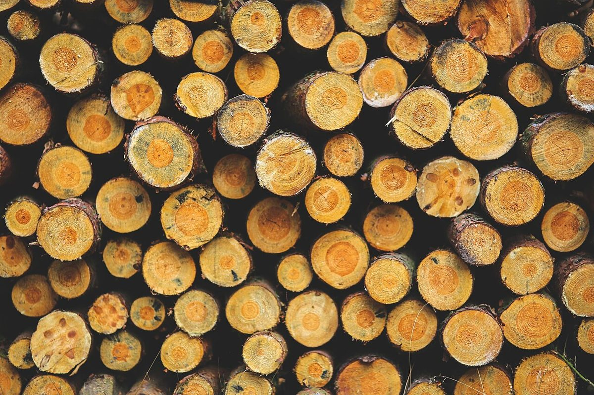

お店のこと
お店のこと
確認できているのは、所在地・電話番号・Instagramのアカウントです。
このページの「連想」の部分は、制作側が考えて書いたものです。お店の実際の様子・考え・メニューとは関係がありません。
確認できていること
- 店名は「5EN CAFE」、業種はカフェ
- 所在地は茨城県龍ケ崎市馴馬町２９７１−２(〒301-0004)
- 電話番号は0297-84-1551
- Instagramは @5encafejapan
- 営業時間・定休日・メニュー・価格・ご予約・駐車場は準備中

制作側の連想
5・E・Nの三つ。
5数字の5
アルファベットの5番目はE
Nアルファベットの14番目はN
屋号の由来は分かりません。制作側は、数字と文字が並ぶ見た目から、視力表のEを連想しました。右・下・左・上と向きを変えながら、段ごとに小さくなっていく。そんな作りをこのサイトの骨組みにしています。お店の考えとは関係のない、制作側の連想です。

